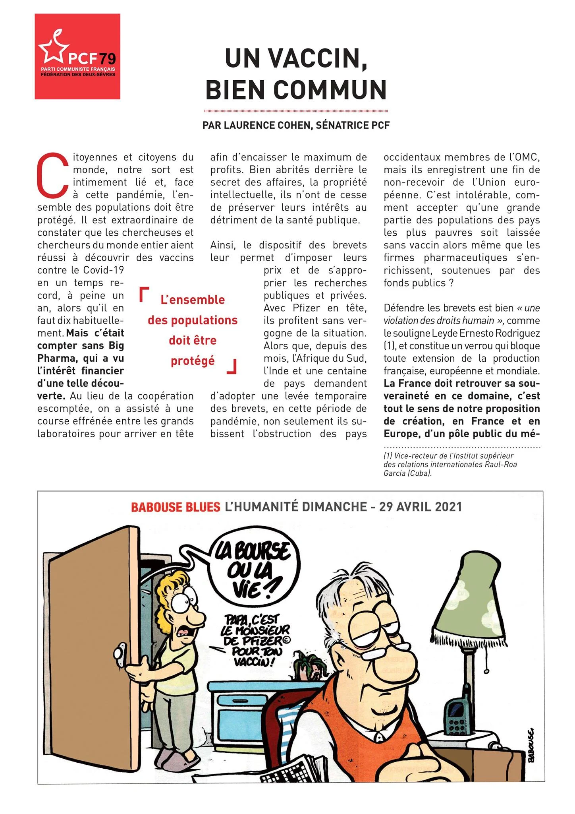
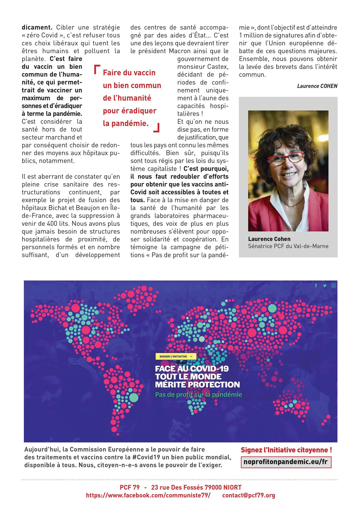

Publication d’archives
Faire du vaccin un bien commun de l'humanité pour éradiquer la pandémie, par Laurence Cohen, Sénatrice PCF
Date indiquée par Facebook · 10 mai 2021
Texte conservé avec la publication
Contexte du dossier
La critique s’élargit à la production du soin. Le 2 avril, un texte signé Thierry Aury, du PCF de l’Oise, répond à l’allocution présidentielle du 31 mars. Il oppose les efforts demandés aux soignants, aux familles et aux écoles aux moyens qui leur manquent. Cette parole relayée garde son auteur ; elle ne devient pas un communiqué deux-sévrien.
Le 15 avril, une autre publication discute les responsabilités du déclin pharmaceutique après les propos d’Agnès Pannier-Runacher. Elle vise la continuité des politiques favorables aux marchés, les aides à Sanofi et les suppressions de recherche. Le 10 mai, le titre d’une intervention de la sénatrice Laurence Cohen réaffirme le vaccin comme bien commun. Le contenu complet de cette intervention n’étant pas dans le libellé, seule cette position est retenue. Les trois traces relient besoins sanitaires et contrôle des décisions économiques.


Sources
Archive rouge · export Facebook · AR-0002-FB-02035
À lire aussi · Novembre 2022 : un budget à la hauteur des vies ?